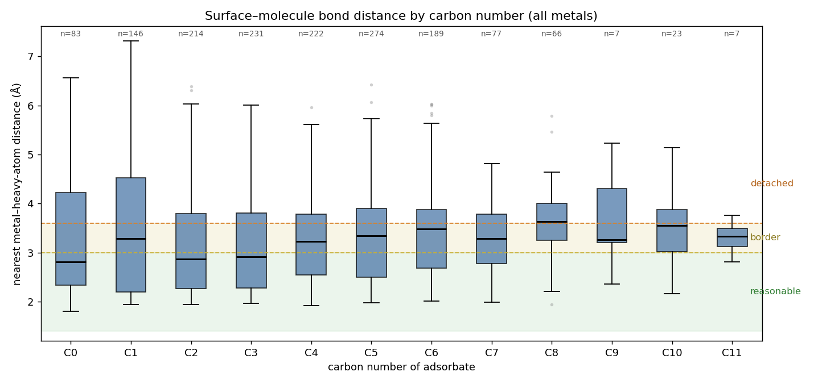
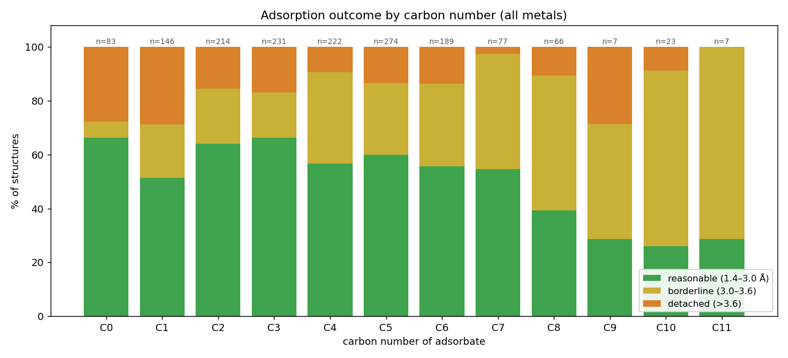
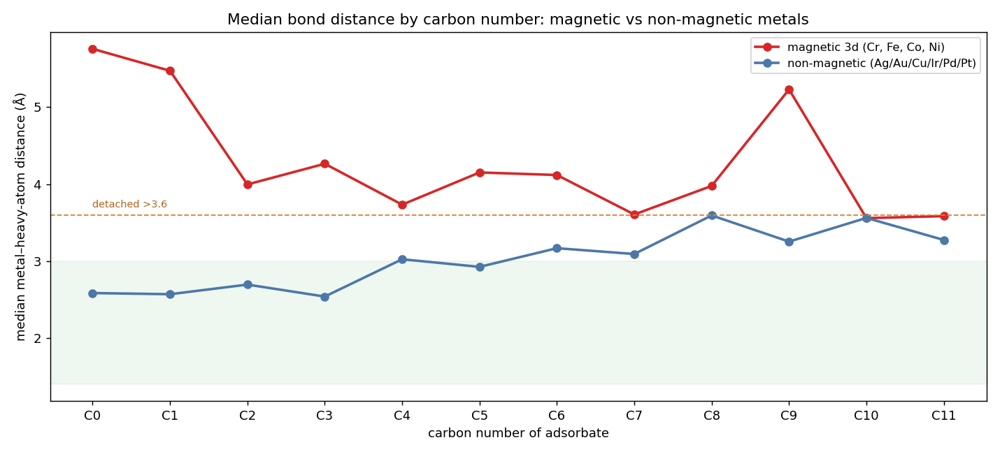

| Carbon | N | # molecules | median Å | mean Å | reasonable | borderline | detached |
|---|---|---|---|---|---|---|---|
| C0 | 83 | 9 | 2.81 | 3.37 | 66% | 6% | 28% |
| C1 | 146 | 12 | 3.29 | 3.49 | 51% | 20% | 29% |
| C2 | 214 | 14 | 2.87 | 3.14 | 64% | 21% | 15% |
| C3 | 231 | 12 | 2.92 | 3.19 | 66% | 17% | 17% |
| C4 | 222 | 23 | 3.23 | 3.22 | 57% | 34% | 9% |
| C5 | 274 | 23 | 3.35 | 3.31 | 60% | 27% | 14% |
| C6 | 189 | 20 | 3.48 | 3.44 | 56% | 31% | 14% |
| C7 | 77 | 7 | 3.28 | 3.24 | 55% | 43% | 3% |
| C8 | 66 | 9 | 3.63 | 3.58 | 39% | 50% | 11% |
| C9 | 7 | 1 | 3.26 | 3.70 | 29% | 43% | 29% |
| C10 | 23 | 3 | 3.56 | 3.44 | 26% | 65% | 9% |
| C11 | 7 | 1 | 3.33 | 3.31 | 29% | 71% | 0% |